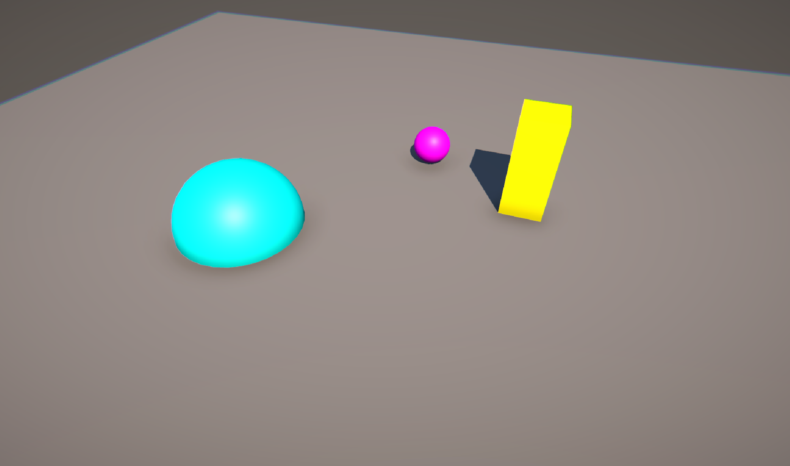
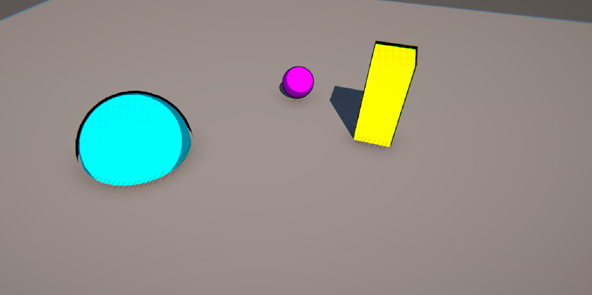
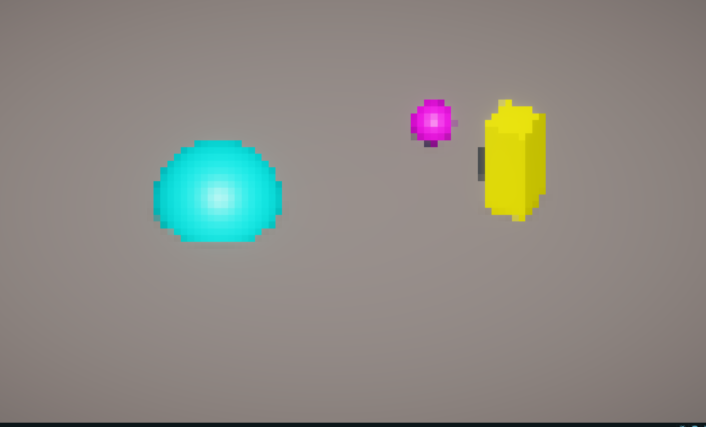
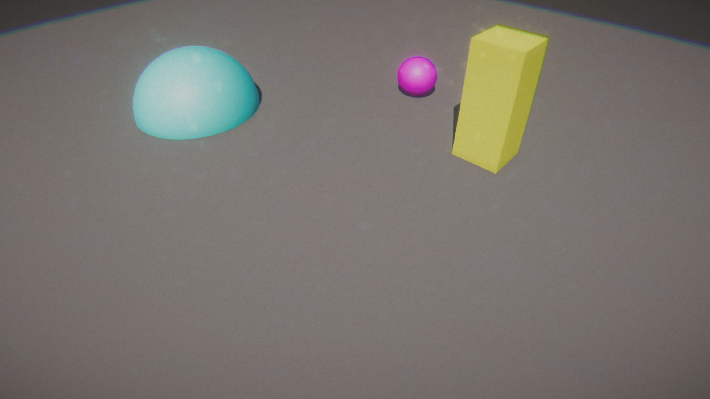
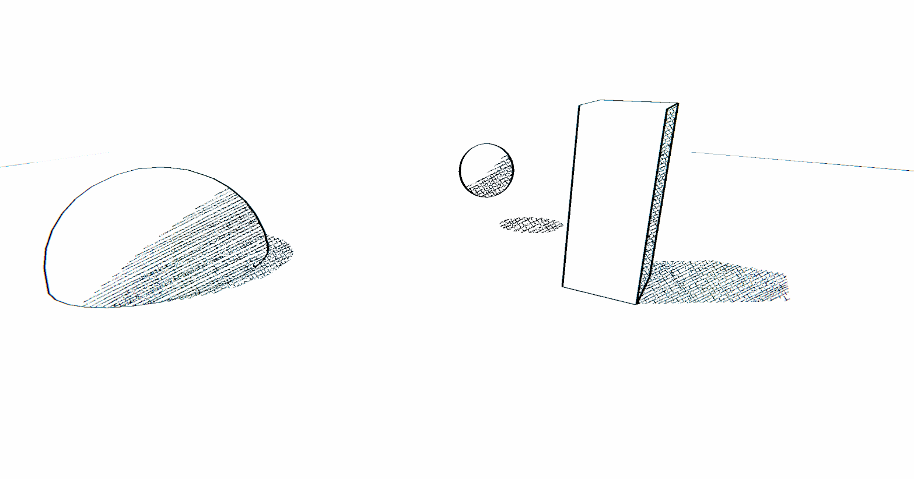
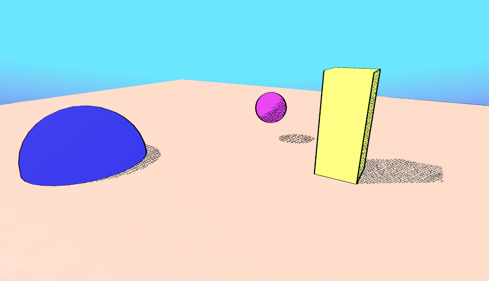
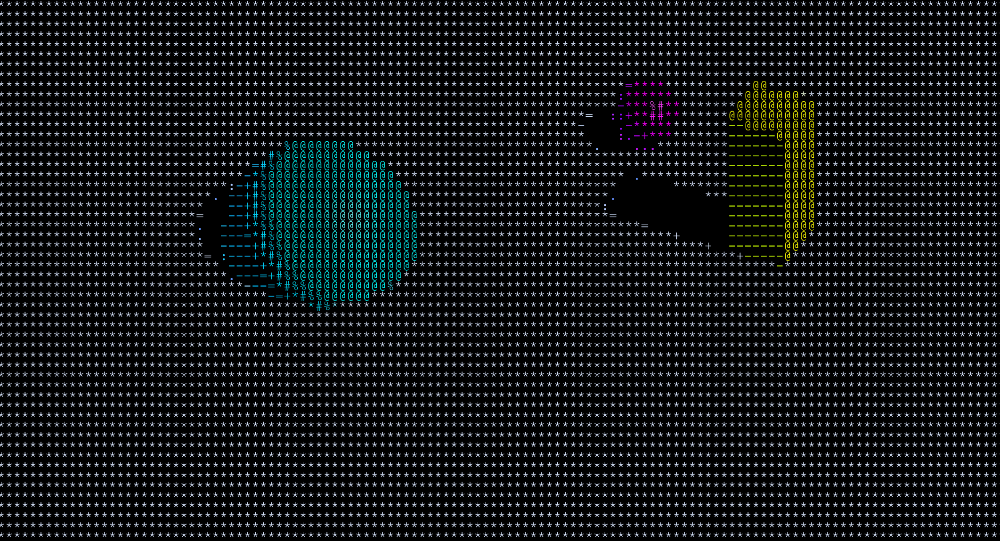

This was some work I did in Unity making shaders in April of 2024. Here is the base scene with no shaders:
I started of with a cartoom shader making use of cel-shading, outline, a benday-dot bloom, and a cross hacth shade affect. this was the final result:
The next one I worked on was a pixel renderer, this does have the ability to change the resolution any amount, this is in 64-bit:
Next I worked on a VHS rendering, as if the scene was taped on a recorder. This will not show of the glitch effect well in photo format:
This is a Moebius artstyle filter. using consitent thin line weights, vibrant colors and crosshatching for shading, this is What I have:
 This is the last shader which is a ASCII color shader:
That was all the shaders I have worked on, and had a lot of fun learning about, shadergraphs, HLSL, Render features, and passes.